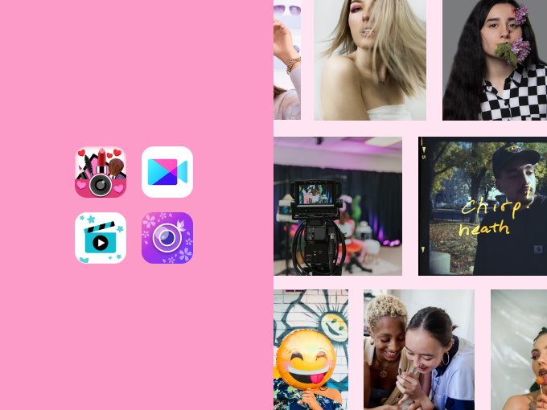
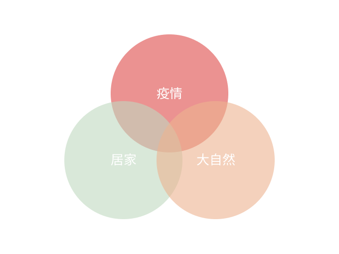
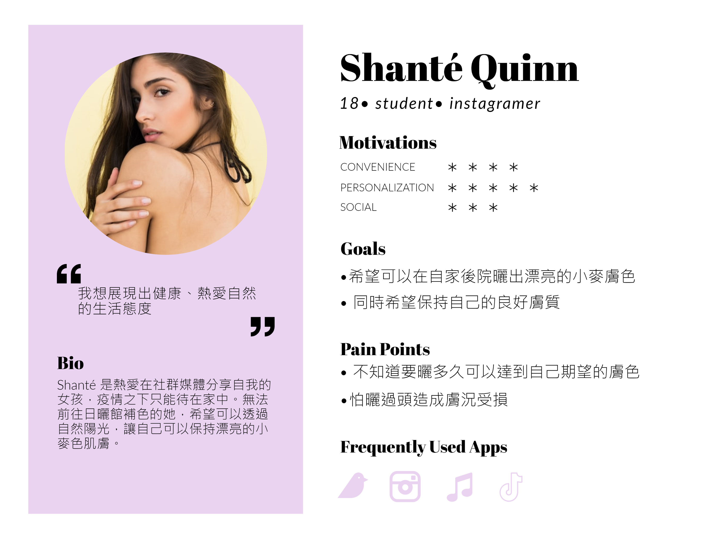
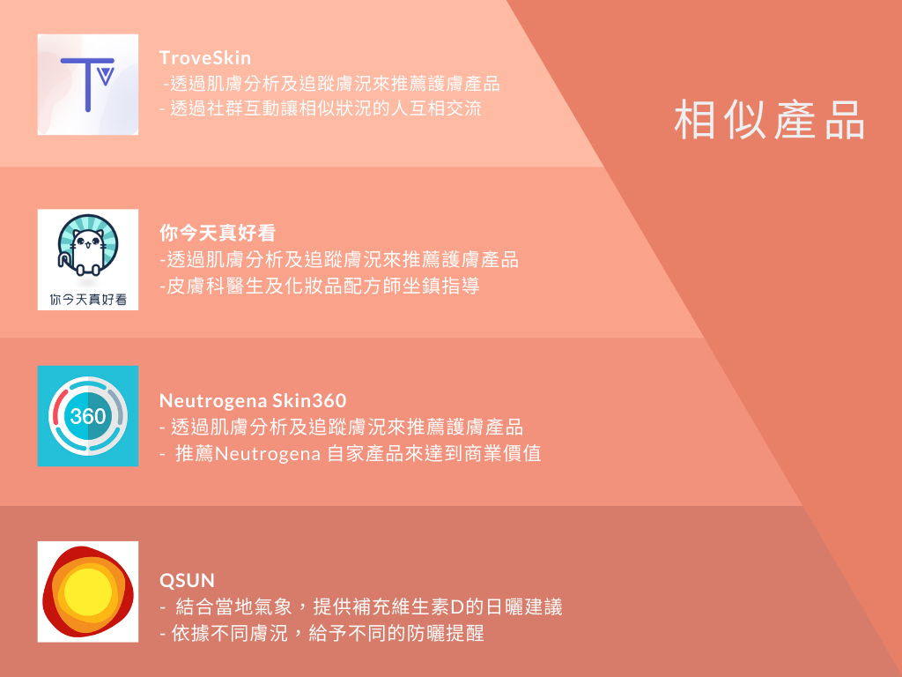
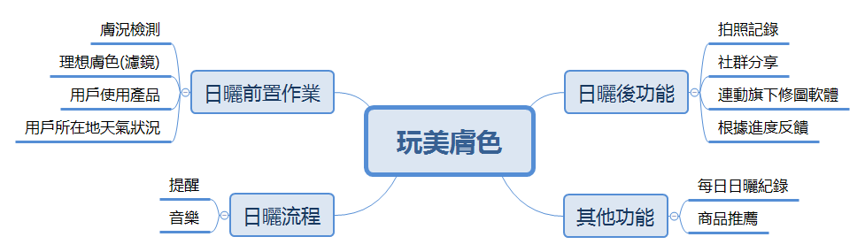
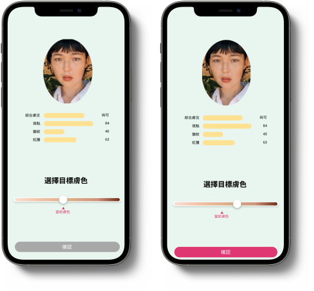
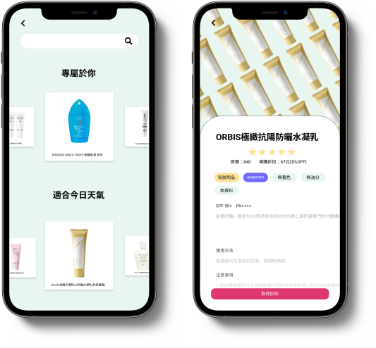

Introduction
玩美移動與課程合作的任務，希望我們可以以他們的AR與Face AI技術來做創意上的發想，提供有潛在價值商業價值的產品原型。
玩美膚色運用膚色分析及AR模擬技術，讓使用者可以朝適合自己的理想膚色邁進；同時連動其他完美移動的其他軟體，讓使用者可以紀錄日曬歷程並在社群上分享。
Background reasearch

完美移動面向消費者端的服務主要是藉由app，讓用戶可以透過AR技術來體驗不同的風格，不論是妝感、髮色、配飾……等。除此之外，也有相應的修圖、剪輯軟體，囊括了用戶從拍攝、修改到上傳社群的一條龍服務。
其用戶主要為年輕的女性族群，熱愛打扮、對於時尚美妝資訊有較高的敏感度；同時他們樂於在設群媒體上分享自己的生活，習慣於網路上的互動。
Market reasearch

完美移動的客群主要面向歐美地區，在2021年國外仍然受疫情所苦。由於長期的居家辦公，相較於或正式或潮流的造型，像是Athflow這種休閒舒適的著衣風格興起；長期待在室內也讓許多人在疫情趨緩時，開始投入大自然的懷抱，露營登山等戶外活動蔚為流行。
idea

我們以此為發想，以熱愛大自然、健康清新的女孩為目標，希望藉由膚況檢測、face AI等技術，藉由追蹤膚況以及日曬建議，讓用戶可以獲得理想的小麥膚色。
Conpetitive Product Analysis

市面上有許多針對膚況進行檢測並依照用戶的狀況提供不同建議的app，他們也會持續追蹤，並進一步優化推薦內容；而QSUN特別針對日曬，提供適合攝取維生素D的時間，以及塗抹防曬的時機。
Functional map

我們最終在其他產品膚況檢測、地區紫外線分析及推薦產品的基礎上，打造日曬計畫。
Prototype

一開始需要拍下照片，透過系統分析膚況；之後用戶可以透過拉桿來查看不同膚色在自己身上的效果，進而選定自己想要達到的美麗膚色。
在無法進行日曬計畫時(例如還未選取自己使用的防曬、助曬產品，抑或是天氣並不適合時)，用戶無法開啟日曬計畫，避免用戶在開始日曬後需要回過頭準備所需物品。根據蔡加尼克效應(Zeigarnik Effect)明確的進度指示有助於提升用戶操作下去的動力，在日曬過程中，會透過語音明確指示用戶下一步行動，讓用戶了解自己正在持續朝目標推進。
在每次完成日曬後，程式會要求你拍下照片以利追蹤，並在之後跳出發送至社群的建議。每日紀錄的照片將會讓用戶體會到自己不斷地靠近目標，根據目標梯度效應(Goal-Gradient Effect)，離完成任務越近，用戶就越快地想完成任務。除此之外讓他人得知自己的計劃，也會得到督促與監督的效果。

在選取使用產品時，我們會依據用戶的膚況推薦合適產品，以此達成商業上的營運手段；同時會不定期的透過通知推送專屬優惠給用戶，讓用戶可透過這款APP來獲得適合自己，價格又優惠的產品。
Result
以完成度、創意、商業價值、可行性進行評分，最終獲得總分第一名，並獲得玩美移動的優先面試資格(但最後因疫情取消)。